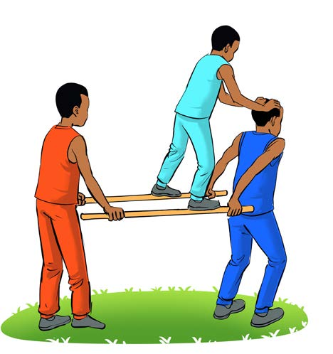

Kubebana kwa kutumia machela ya miti, kama inavyoonekana katika Kielelezo namba 9; na
4.
Kusimama kwenye mapaja na mabega, kama inavyoonekana katika Kielelezo namba 10.

Kielelezo Na 9: Wanafunzi wakiwa wamembeba mwenzao kwa kutumia machela ya miti.Kielelezo Na 10: Wanafunzi watatu wakiwa wametengeneza umbo kwa kubebana.